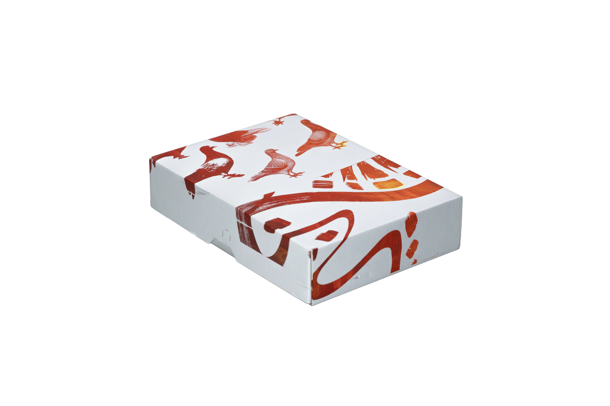

2026
Poster Design
895 mm x 1280 mm

At first glance, the poster seems loud, dangerous and incomprehensible. A quick glance is enough to form a judgement. Prejudices arise everywhere in society – towards musical genres, religions, age groups and much more.
But if you pause and look more closely, you’ll realise that behind the apparent illegibility lies a clear word: prejudice. This is exactly how prejudices arise: quickly, superficially and without genuine understanding. Often, the problem lies not in the image, but in our perception of it. The accompanying feature article explores prejudice in our society and how to overcome it.